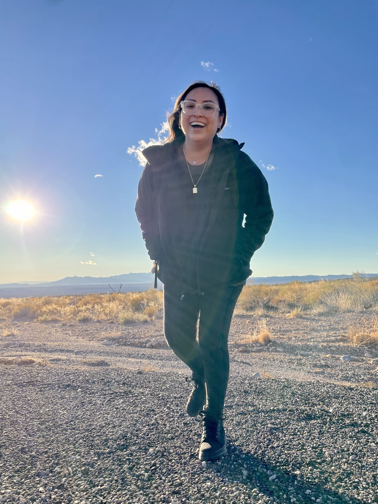
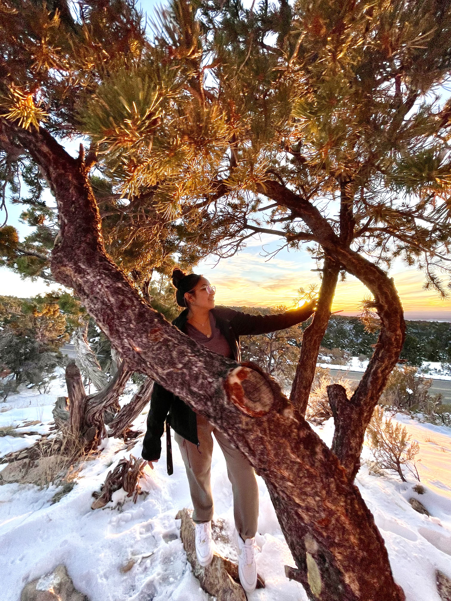
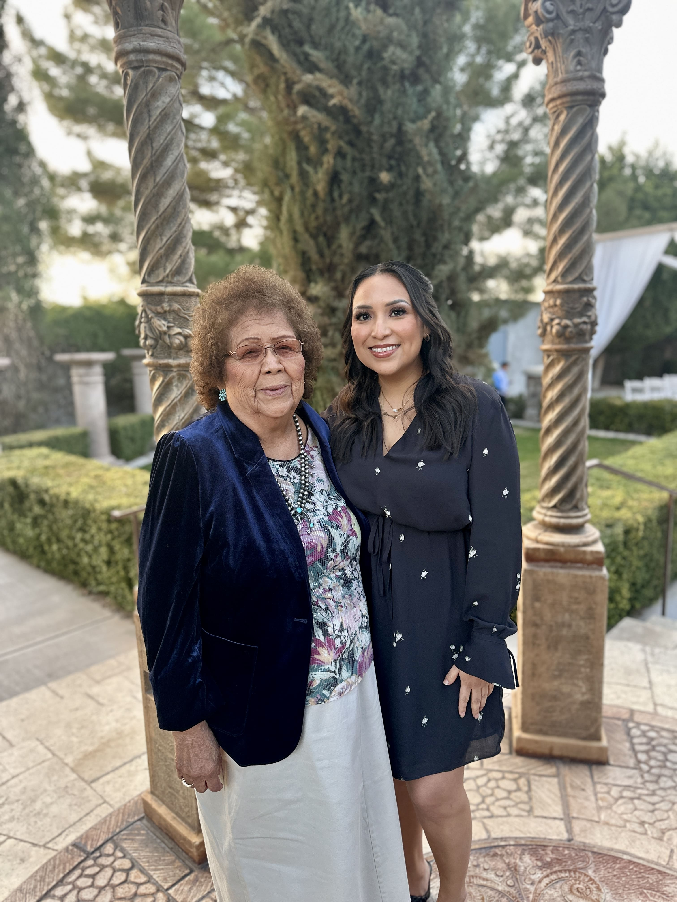
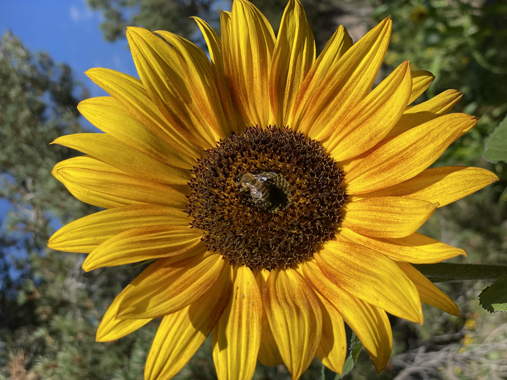
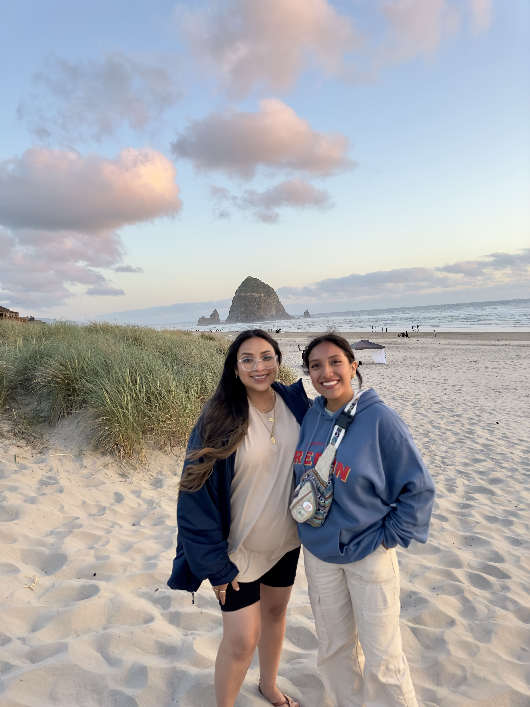

Hi, I'm Dinnelle
I’m an amateur photographer learning as I go, exploring the art of storytelling through the lens and finding beauty in everyday moments. I love what I do because life isn’t staged—it’s real, unpredictable, and full of emotion.
I’m Native American (Navajo), and my kids are Polynesian (Tongan). Together, we’re rooted in cultures rich with history, identity, and family—reminders that every story deserves to be seen and remembered. Life is messy, but that’s what makes it beautiful. My goal is simple: to capture what’s real—not posed, not perfect, just you.



Connection Over Perfection
I’m not your typical photographer. My sessions are relaxed, guided, and genuine—more like hanging out with a friend who happens to have a camera. I don’t chase perfect poses; I look for honest moments that tell your story.
I take time to understand what matters most to you—your family, your roots, your rhythm. Because the best photos aren’t forced; they’re felt. When you feel comfortable, seen, and celebrated, that’s when the magic happens.